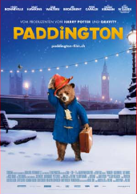
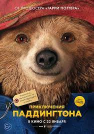
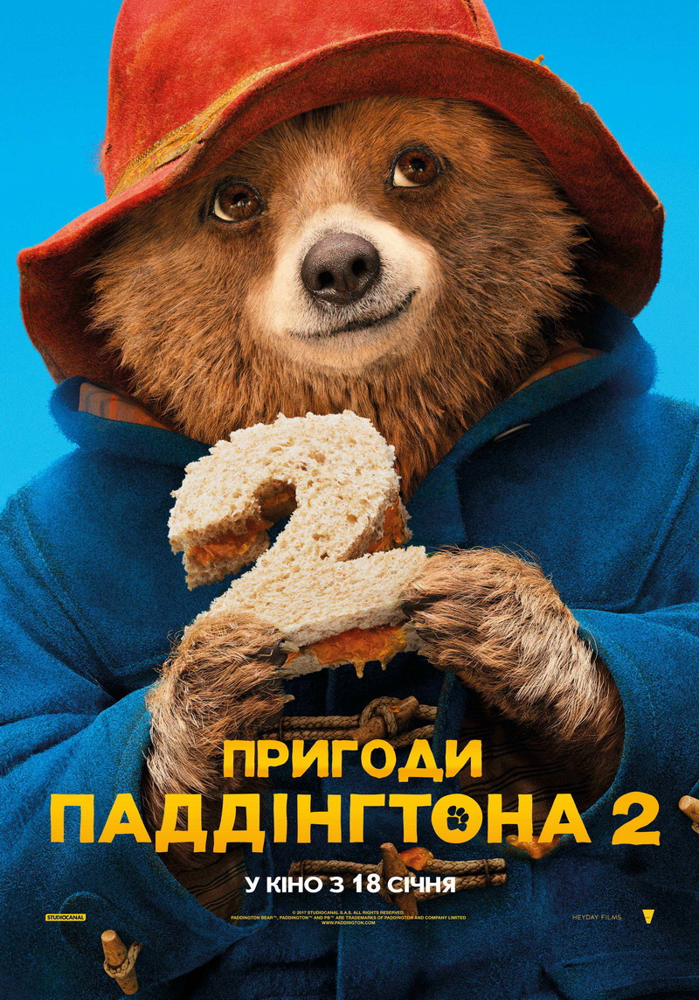

Ведмедик Паддінгтон —герой книги англійського письменника Майкла Бонда і однойменного дитячого серіалу. У 1975 році створили мультфільм про нього. Також компанія Cinar зняла мальований мультсеріал Пригоди ведмежати Паддінгтона. Існує два фільма про пригоди цього ведмежатка, які дуже подобаються і дітям, і дорослим. |
 |
|  |
«Пригоди Паддінгтона»,частина 1 — сімейний комедійний фільм про ведмедик Паддінгтон, який був створений у 2014 році. Одного разу з Дрімучого Перу в Англію приїжджає добрий, ввічливий і акуратний ведмедик, що належить до рідкісного виду перуанських ведмедів. На станції Паддінгтон (на честь якої його і назвали) він знайомиться з дружною сім'єю Браунів, які з радістю приймають його в свою сім'ю. Але зла таксидермістка Міллісент хоче зробити з Паддінгтона опудало для музею… |
«Пригоди Паддінгтона 2»— пригодницька комедія про продовження пригод ведмедика Паддінгтона. В українських кінотеатрах фільм з'явився вже з 18 січня. Паддінгтон вирішив придбати старовинну книгу в антикварній крамниці Грубера. Герой наполеглево працював, щоб зібрати кошти на подарунок. Перед покупкою виявляється, що книгу викрали, а він сам стає підозрюваним у цій справі. Сім'я Браунів, у якої він живе, намагаються довести невинуватість ведмедика. Пригод у нього вистачатиме! |
 |